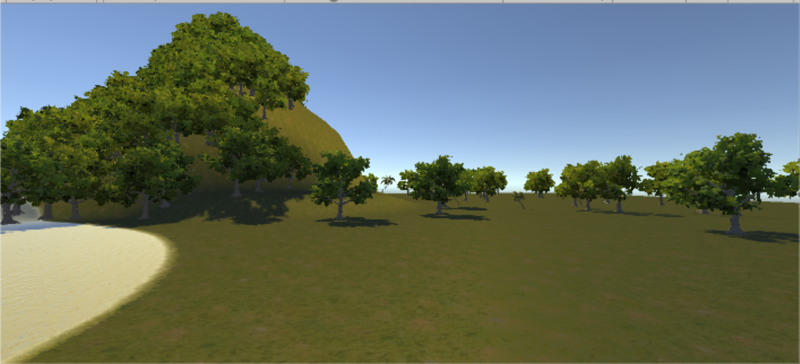
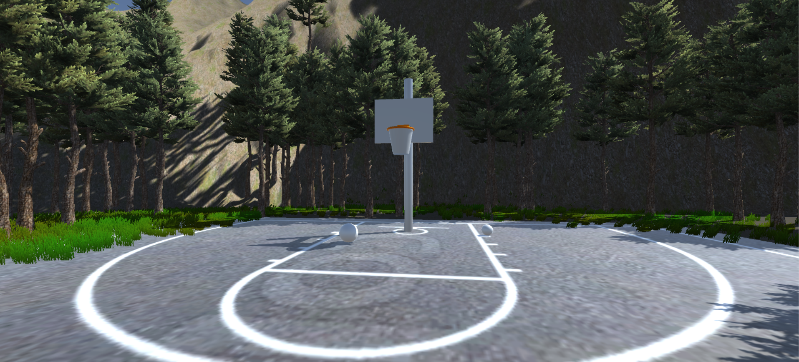

We explored 2D versions and 3D versions of the the algorithm visualization
Here's our solution...
Our Selection Sort
What We learned
Challenges
World Creation and Immersion


Challenges
NewtonVR vs. VRTK
Unity/C#
Object aggregation
User Comfort
Nausea
Feet Tracking
Environment Creation and Immersion
Appropriate Sizing
Minimal Distractions
Realistic Physics
Conclusion
Final Demo
Results So Far
Future Work
Interfaces
Escape the Room
References
Daly, Tebring. Influence of alice 3: reducing the hurdles to success in a cs1 programming course. Diss. University of North Texas, 2013.
Naps, Thomas L., et al. "Exploring the role of visualization and engagement in computer science education." ACM Sigcse Bulletin. Vol. 35. No. 2. ACM, 2002.
Schwan, Stephan, and Roland Riempp. "The cognitive benefits of interactive videos: Learning to tie nautical knots." Learning and Instruction 14.3 (2004): 293-305.
Patrick Thibodeau. IT Jobs will grow 22% through 2020, says U.S., 2012.
Watson, Christopher, and Frederick WB Li. "Failure rates in introductory programming revisited." Proceedings of the 2014 conference on Innovation & technology in computer science education. ACM, 2014.